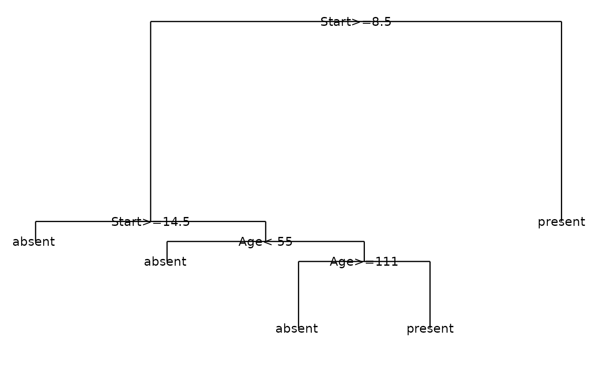

Extract data from classification tree object for plotting using ggplot.
Source:R/dendro_rpart.R
dendro_data.rpart.RdExtracts data to plot line segments and labels from a
rpart::rpart() classification tree object. This data can then be
manipulated or plotted, e.g. using ggplot2::ggplot().
Usage
# S3 method for class 'rpart'
dendro_data(
model,
uniform = FALSE,
branch = 1,
compress = FALSE,
nspace,
minbranch = 0.3,
...
)Arguments
- model
object of class "tree", e.g. the output of tree()
- uniform
if TRUE, uniform vertical spacing of the nodes is used; this may be less cluttered when fitting a large plot onto a page. The default is to use a non-uniform spacing proportional to the error in the fit.
- branch
controls the shape of the branches from parent to child node. Any number from 0 to 1 is allowed. A value of 1 gives square shouldered branches, a value of 0 give V shaped branches, with other values being intermediate.
- compress
if FALSE, the leaf nodes will be at the horizontal plot coordinates of 1:nleaves. If TRUE, the routine attempts a more compact arrangement of the tree. The compaction algorithm assumes uniform=TRUE; surprisingly, the result is usually an improvement even when that is not the case.
- nspace
the amount of extra space between a node with children and a leaf, as compared to the minimal space between leaves. Applies to compressed trees only. The default is the value of branch.
- minbranch
set the minimum length for a branch to minbranch times the average branch length. This parameter is ignored if uniform=TRUE. Sometimes a split will give very little improvement, or even (in the classification case) no improvement at all. A tree with branch lengths strictly proportional to improvement leaves no room to squeeze in node labels.
- ...
ignored
Value
A list of three data frames:
- segments
a data frame containing the line segment data
- labels
a data frame containing the label text data
- leaf_labels
a data frame containing the leaf label text data
Details
This code is in essence a copy of rpart::plot.rpart(), retaining
the plot data but without plotting to a plot device.
See also
Other dendro_data methods:
dendro_data(),
dendro_data.tree(),
dendrogram_data(),
rpart_labels()
Other rpart functions:
rpart_labels(),
rpart_segments()
Examples
### Demonstrate rpart
if (require(rpart)) {
require(ggplot2)
fit <- rpart(Kyphosis ~ Age + Number + Start, method = "class",
data = kyphosis)
fitr <- dendro_data(fit)
ggplot() +
geom_segment(data = fitr$segments,
aes(x = x, y = y, xend = xend, yend = yend)
) +
geom_text(data = fitr$labels, aes(x = x, y = y, label = label)) +
geom_text(data = fitr$leaf_labels, aes(x = x, y = y, label = label)) +
theme_dendro()
}
#> Loading required package: rpart
